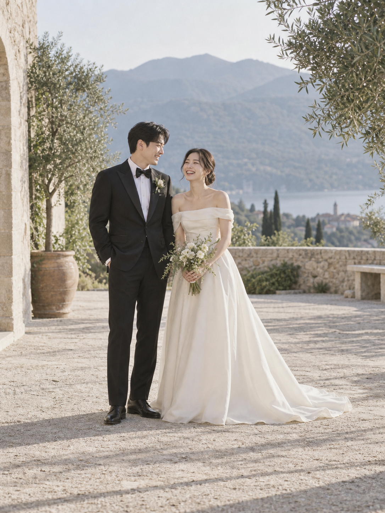

저장한 내용을 읽지 못했어요. 기존 데이터 보호를 위해 새 저장을 멈췄어요. 브라우저의 사이트 저장 설정을 확인해 주세요.
우리, 결혼합니다
김민준 · 이서연

2027년 5월 22일 토요일 오후 2시
서울숲 아틀리에 · 가든홀
인물과 예식 정보가 가상인 예시 청첩장입니다.
소중한 분들께
저희의 시작에 함께해 주세요
같은 풍경을 바라보고,
작은 일에도 함께 웃으며
서로의 가장 다정한 편이 되었습니다.
이제 부부라는 이름으로
천천히, 오래 걸어가려 합니다.
그 첫날에 함께해 주시면 감사하겠습니다.
김정호 · 박은숙의 아들 민준
이영수 · 최미정의 딸 서연
예식 안내
2027년 5월 22일
토요일 오후 2시
서울숲 아틀리에 · 가든홀
| 일 | 월 | 화 | 수 | 목 | 금 | 토 |
|---|
우리의 순간
함께라서 좋은 날들
사진을 누르면 크게 볼 수 있어요.
오시는 길
서울숲 아틀리에
가든홀
서울 성동구 뚝섬로 273
예시 약도 · 실제 축척과 다름
예시 장소입니다. 지도는 서울숲 위치로 연결돼요.
대중교통
수인분당선 서울숲역 3번 출구
2호선 뚝섬역 8번 출구
주차 안내
예식장 주차 안내 예시입니다.
주차 위치와 무료 주차 시간은 실제 예식장 안내로 바꿔 주세요.
식사 및 편의시설
식사 장소·운영 시간과 유아 의자, 엘리베이터 이용 안내를 담는 공간입니다. 현재는 예시 정보예요.
함께해 주실 당신께
참석 여부를 알려주세요
귀한 걸음을 편히 모실 수 있도록
참석 인원과 식사 여부를 남겨 주세요.
예시 응답은 이 브라우저에만 저장됩니다.
마음 전하실 곳
따뜻한 마음에 감사합니다
멀리서 보내주시는 축복도
소중히 간직하겠습니다.
신랑 측 계좌
예시은행 000-0000-0000
예시은행 000-0000-0001
신부 측 계좌
예시은행 000-0000-0002
예시은행 000-0000-0003
실제 송금에 사용할 수 없는 예시 계좌입니다.
축하의 한마디
오래도록 기억할 마음
작성한 글은 이 브라우저에서만 볼 수 있어요.